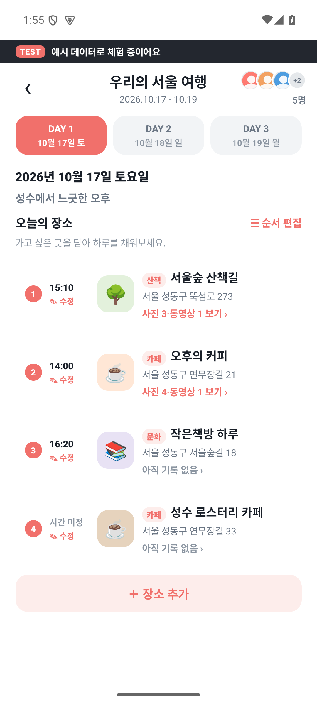
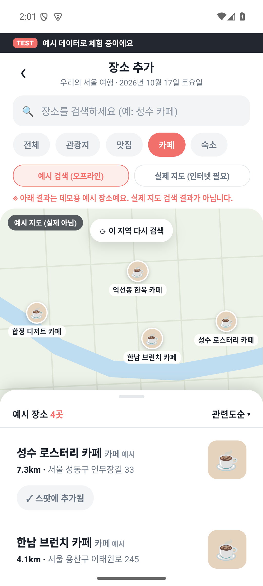
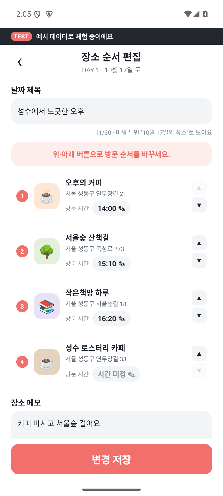
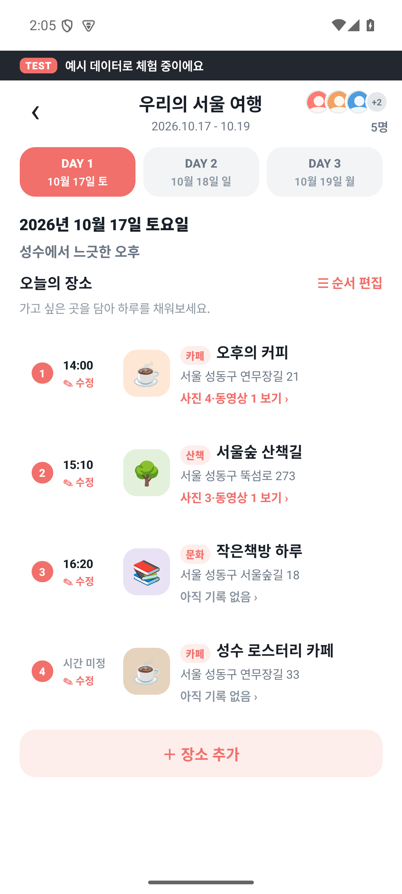
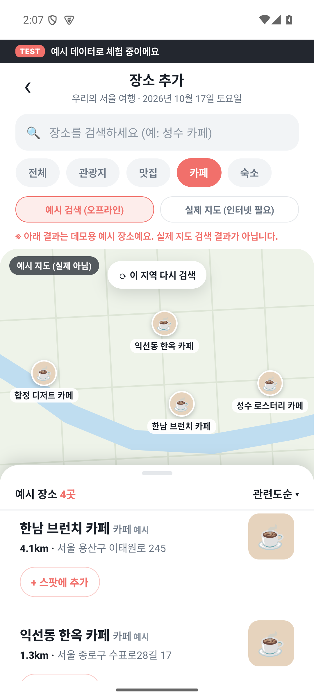
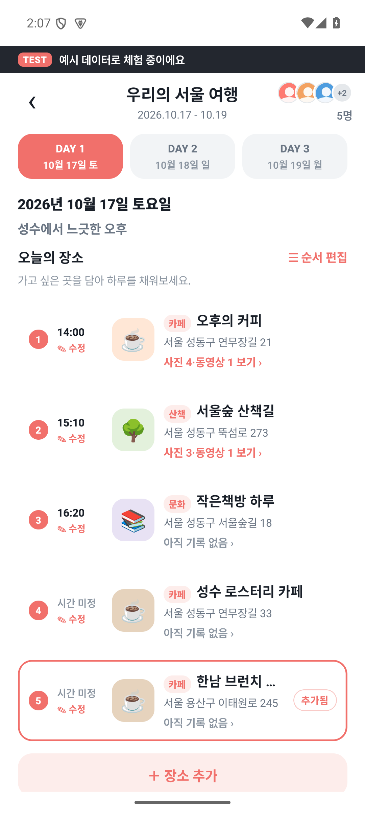

실제 실행 근거 · 1차 신규 설계/실서비스 검수와 구분 · 2026-10-17
| 항목 | 값 |
|---|---|
| 기준일 | 2026-10-17 |
| APK | 기능 명세서 자료/ReelSpot-Demo.apk |
| SHA256 | 97ffbb36feee848c12efe3cc75faf15b1370b94b62e4da3741c881be98897e9a |
| 패키지·버전 | com.reelspot.app.demo · 0.1.0 (code1) |
| 에뮬레이터 | daylog35 · Android15(API35) · x86_64 · 1080×2400 |
| 실행방식 | 디스플레이 연결 없이 Android 에뮬레이터를 부팅하고 ADB로 앱 실행·터치·원본 화면 캡처 |
| 실행명령 | adb -s emulator-5554 shell am start --user 0 -n com.reelspot.app.demo/.MainActivity |
APK를 직접 설치·실행해 예시 데이터 모드로 화면을 탐색했다. 이전 artifacts/reelspot-review 캡처를 이번 실행 근거로 재사용하지 않았다. 부팅 중 시스템 UI 대기 창이 나타났고 부팅·사용자 잠금 해제 뒤 앱 실행을 확인했다. 이 현상을 앱 기능 결함으로 판정하지 않았다.
일정 선택
서울 여행 개요·날짜 선택
날짜별 장소 목록
장소별 사진/영상 카드·작성자·시각·설명
업로드 후보 시트
기기 가져오기·사진/영상 촬영 메뉴
예시 지도 카페 분류·결과
날짜 제목·방문 시각·순서 편집
| 실행한 변경 | 변경 전 | 저장·추가 뒤 | 근거 |
|---|---|---|---|
| 서울숲 산책길 아래로 이동 후 변경 저장 | 서울숲 산책길→오후의 커피 | 오후의 커피→서울숲 산책길 | 09-plan → 10-order-edited → 11-order-saved |
| 예시 결과의 한남 브런치 카페 추가 | 10월17일 장소4개 | 장소5개·한남 브런치 카페·시간미정 | 13-add-candidate → 14-place-added |
| 데모 관찰 | 최신 명세 | 반영 |
|---|---|---|
| 여행→날짜→장소 탐색 | 모임→일정 전체 상세, 날짜는 필터 | UI05·UI08·UI09로 정리 |
| 업로드 후보 최대10개 안내 | 촬영/기기 혼합1~120개 | UI14·UI16·서버검증 변경 |
| 날짜 전체 장소 메모 입력 | 날짜 제목만, 공통 메모 제외 | UI12에서 메모 제거 |
| 카드별 작성자·시간·설명과 정렬 | 파일당 카드·묶음 정렬·선택 저장 | UI09·UI13·UI18·UI19 참고 |
| 지도에 예시 검색/실제 지도 선택 | 국내 카카오맵 실제 연동 | 예시 결과를 실지도 성공으로 보고하지 않음 |
실제 데모 UI 관찰과 예시 데이터 변경을 확인한 결과다. 신규 화면의 기능이나 서버의 완료 조건을 검증한 결과는 아니다.
실제 카카오/Google 인증 — 이번 실행에서 검증하지 않음
실제 서버 파일 업로드와 여러 기기 동기화 — 이번 실행에서 검증하지 않음
실제 카카오 지도 검색 — 이번 실행에서 검증하지 않음
카메라 실제 파일 생성·저장 — 이번 실행에서 검증하지 않음
서버 위치 제거·콘텐츠 검사 — 이번 실행에서 검증하지 않음
보관 만료·운영·종료 후 권한 — 이번 실행에서 검증하지 않음
Android12 최저 실기기·성능목표 — 이번 실행에서 검증하지 않음
| ID | 행동 | 시각 |
|---|---|---|
| 01-entry | 앱 시작 후 일정 선택 화면 | 2026-10-17T13:50:46.914309+09:00 |
| 02-schedule | 일정 선택 → 우리의 서울 여행 개요 | 2026-10-17T13:55:16.764717+09:00 |
| 03-day | 서울 여행 → 10월17일 날짜 선택 | 2026-10-17T13:55:21.183702+09:00 |
| 04-place | 10월17일 → 서울숲 산책길 기록 | 2026-10-17T13:56:46.854703+09:00 |
| 05-upload | 장소 기록 → 사진·동영상 올리기 | 2026-10-17T13:56:58.277306+09:00 |
| 06-media-source | 업로드 시트 → 추가 버튼 → 파일/촬영 선택 | 2026-10-17T13:59:12.890150+09:00 |
| 07-place-search | 날짜 목록 → 장소 추가 | 2026-10-17T14:00:34.555451+09:00 |
| 08-cafe-results | 예시 지도 → 카페 분류 선택 (실제 지도 검색 아님) | 2026-10-17T14:01:22.465254+09:00 |
| 09-plan | 날짜 장소 목록 → 순서 편집 | 2026-10-17T14:04:53.176010+09:00 |
| 10-order-edited | 서울숲 아래로 버튼으로 방문 순서 변경 (저장 전) | 2026-10-17T14:05:05.889091+09:00 |
| 11-order-saved | 변경 저장 → 날짜 목록에서 오후의 커피가 첫 번째인지 확인 | 2026-10-17T14:05:10.251630+09:00 |
| 12-search-add | 장소 추가 → 카페 분류 선택 | 2026-10-17T14:07:10.984035+09:00 |
| 13-add-candidate | 예시 장소 결과 스크롤 → 한남 브런치 카페 추가 후보 확인 | 2026-10-17T14:07:16.093911+09:00 |
| 14-place-added | 한남 브런치 카페 추가 → 날짜 목록 반영 확인 | 2026-10-17T14:07:30.861131+09:00 |

근거 파일: 01-entry.png / .xml / .json

근거 파일: 02-schedule.png / .xml / .json

근거 파일: 03-day.png / .xml / .json

근거 파일: 04-place.png / .xml / .json

근거 파일: 05-upload.png / .xml / .json

근거 파일: 06-media-source.png / .xml / .json

근거 파일: 07-place-search.png / .xml / .json

근거 파일: 08-cafe-results.png / .xml / .json

근거 파일: 09-plan.png / .xml / .json

근거 파일: 10-order-edited.png / .xml / .json

근거 파일: 11-order-saved.png / .xml / .json
근거 파일: 12-search-add.png / .xml / .json

근거 파일: 13-add-candidate.png / .xml / .json

근거 파일: 14-place-added.png / .xml / .json